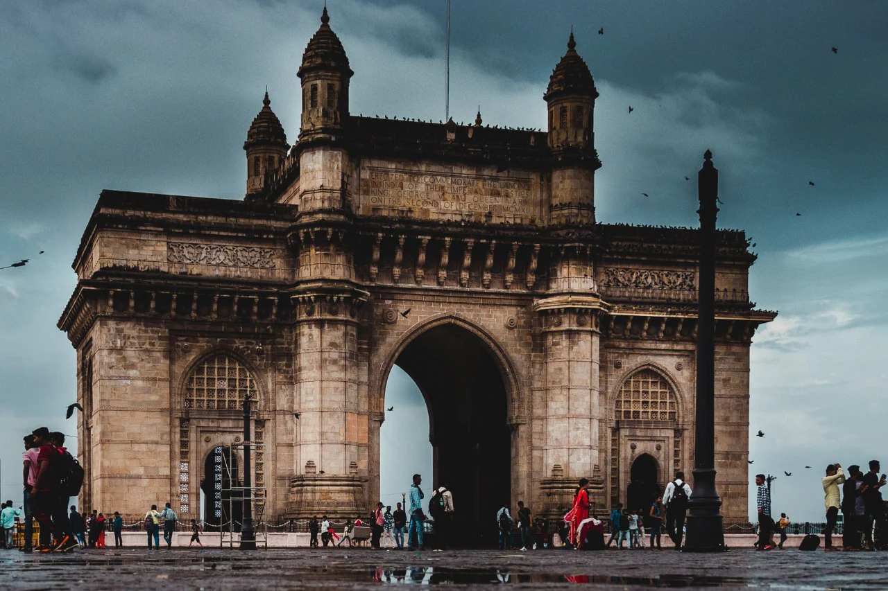
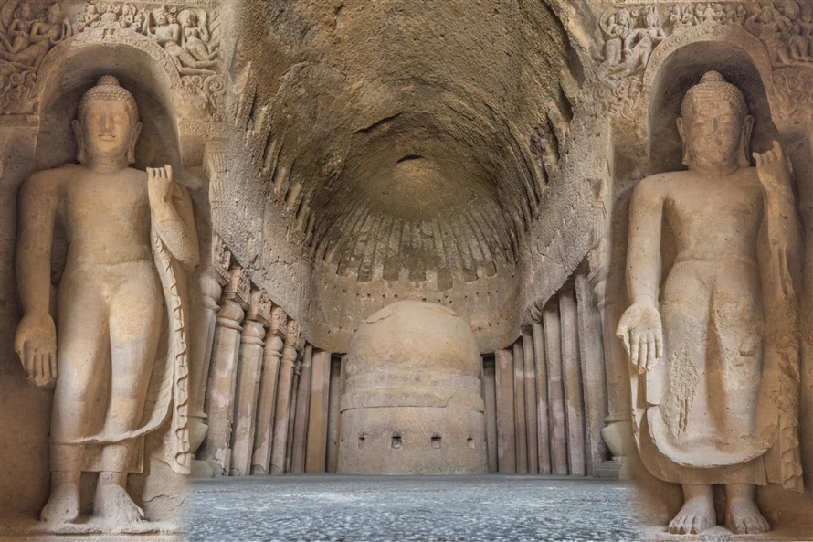
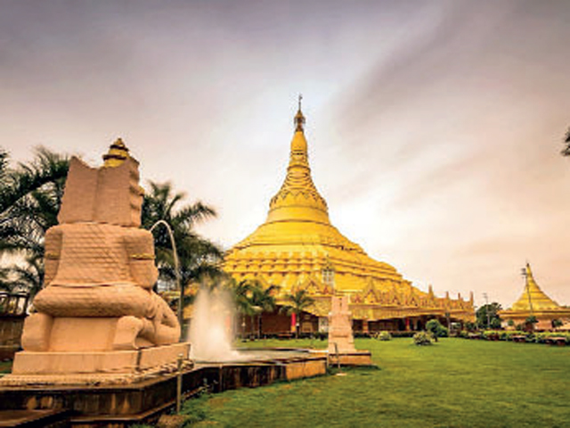
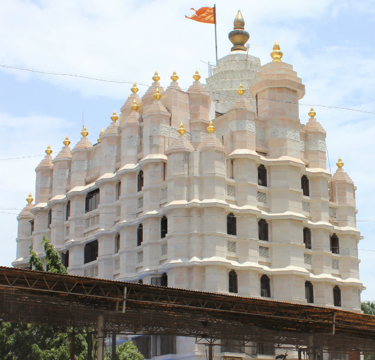
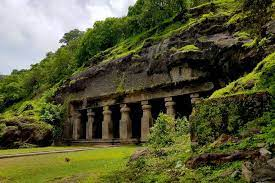
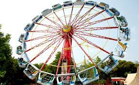
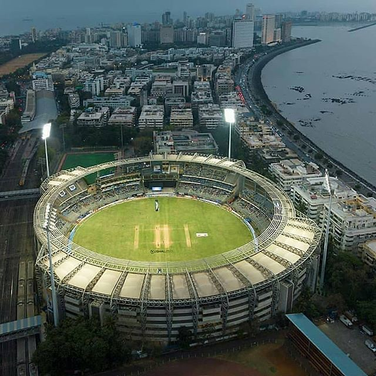
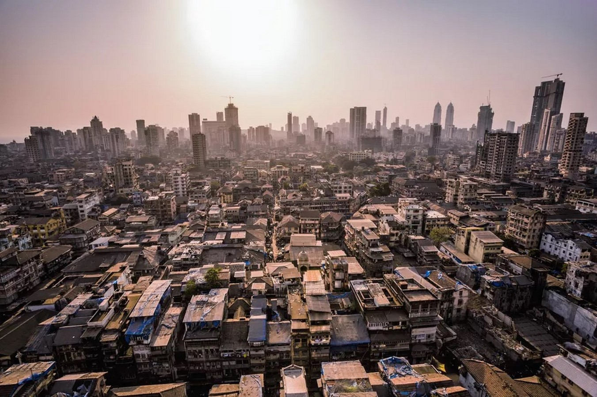
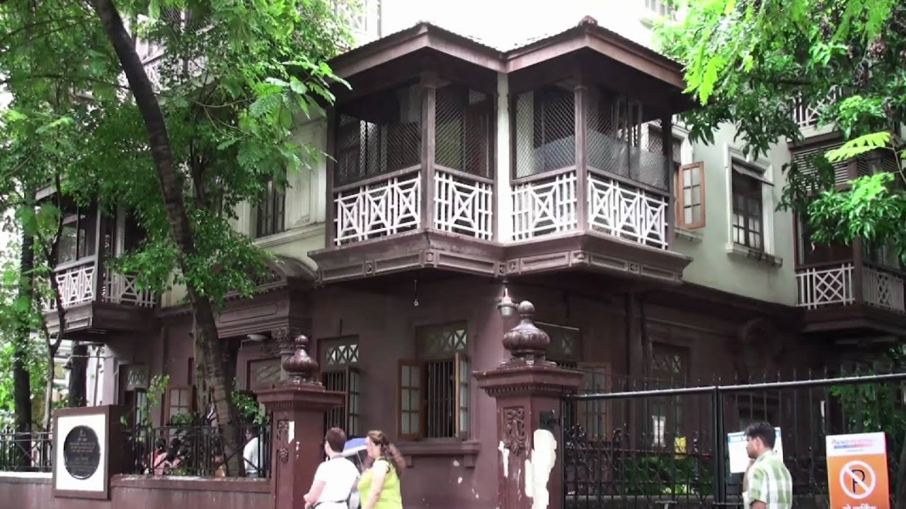
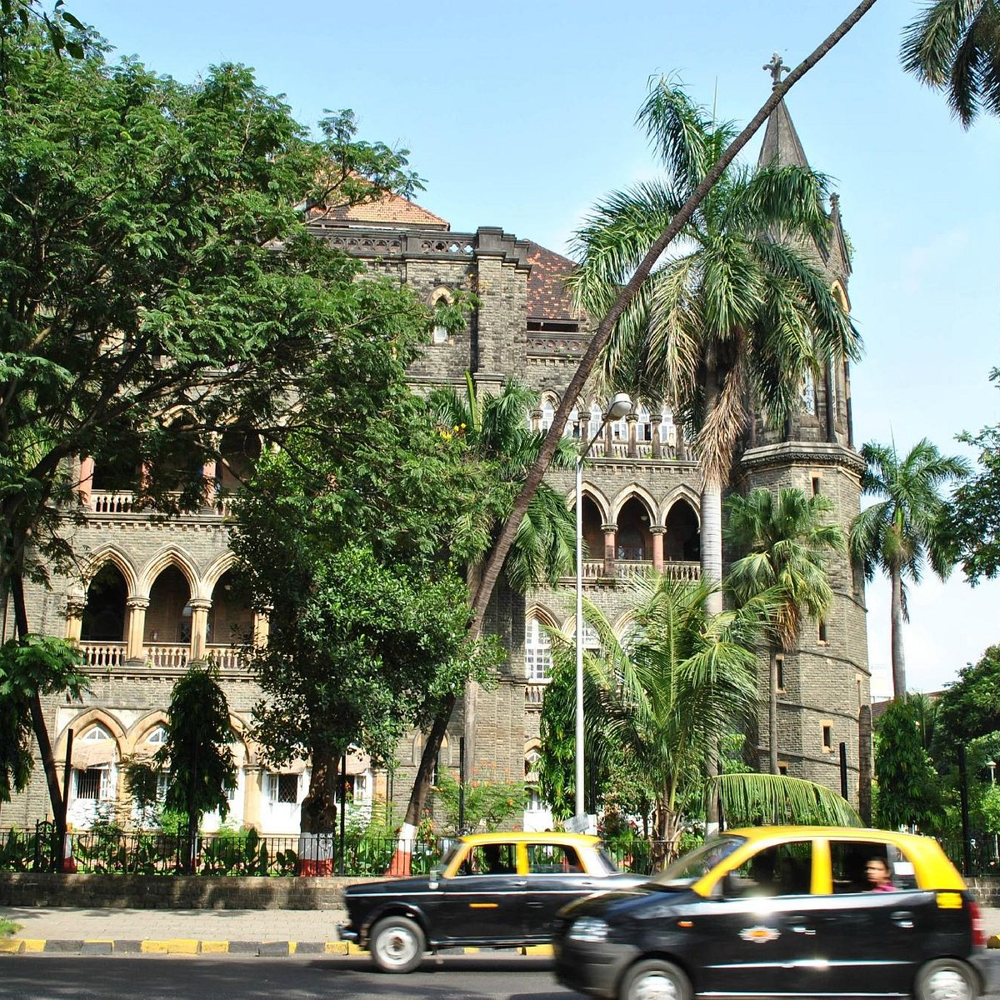

~ Places to Visit in Mumbai ~
Popular things to do
Top Attractions in Mumbai

Marine Drive
Marine Drive, also called the Queen's Necklace, is
one of the most easily recognizable landmarks in Mumbai.
This arc-shaped bay-side boulevard lining the Arabian
Sea in South Mumbai is arguably the best spot to watch
beautiful sunsets and indulge in leisurely walks.

Gateway of India
The Gateway of India is an arch monument built
during the 20th century in Bombay, India. The
monument was erected to commemorate the landing of
King George V and Queen Mary at Apollo Bunder on
their visit to India in 1911.

Bandra-Worli Sea Link
The bridge gives a beautiful sight of three forts in
the region as Bandra, Mahim and Worli, all reminding
us of the medieval history of Mumbai. BandraWorli
Sea Link is the first cable-stayed bridge. It is a
unique bridge of its kind to be constructed in open
seas in India.

Kanheri Caves
Once the caves were converted to permanent monasteries,
their walls were carved with intricate reliefs of Buddha
and the Bodhisattvas. Kanheri caves were built in the 1st
century and had become an important Buddhist settlement
on the Konkan coast by the 3rd century CE.

Global Vipassana Pagoda
The Global Vipassana Pagoda is a Meditation dome hall
with a capacity to seat around 8,000 Vipassana meditators
near Gorai, north-west of Mumbai, Maharashtra, India.
The pagoda was inaugurated by Pratibha Patil, then
President of India, on 8 February 2009.

Shree Siddhivinayak
Shree Siddhivinayak Temple, dedicated to Lord Ganesha,
is an iconic place of worship in Mumbai. The shrine, which
is more than 200 years old, is one of the richest temples
in India and frequented by celebrities, Bollywood stars,
politicians, and commoners alike.

Elephanta Caves
The Elephanta Caves are a collection of cave temples predominantly
dedicated to the Hindu god Shiva. They are on Elephanta Island,
or Gharapuri (literally "the city of caves"), in Mumbai Harbour,
10 kilometres (6.2 mi) east of Mumbai in the Indian state
of Mahārāshtra.

Essel World
Situated in the Gorai Island, Essel World is
the biggest and one of the first amusement
parks in India. This amusement park is popular
for its colossal infrastructure and several
exciting dry and wet rides.

Wankhede Stadium
The stadium has been host to numerous high-profile
cricket matches in the past, most notably the 2011
Cricket World Cup Final, in which India defeated
Sri Lanka and became the first country to win the
cricket world cup on home soil. The stadium played
host to the last match of Sachin Tendulkar's
international career.

Dharavi
India's financial, business and cinema capital, is
the world's fifth biggest urban agglomeration, with a
population of 21 million. Dharavi is no longer Mumbai's
biggest slum. But it is certainly the most well-known,
thanks to the film, Slumdog Millionaire, which it
inspired and which was partly shot there.

Mani Bhavan Gandhi Museum
During his stay in Mani Bhavan (1917-1934), Gandhiji
came forward as the powerful leader in the Indian
Freedom Fight, and he started with Satyagraha which
was his strong weapon. Hence, this place became the
centre of Gandhian activities during Gandhi's stay here.

Colaba
Colaba is renowned for high-end boutiques and imitation
consumer goods, and is popular with tourists. One of Mumbai's
top attractions and the city's most famous monument, the
iconic Gateway of India is a popular place to start exploring
Colaba. This striking symbol of the British Raj era was completed
in 1924 to commemorate the visit of King George V and Queen Mary.